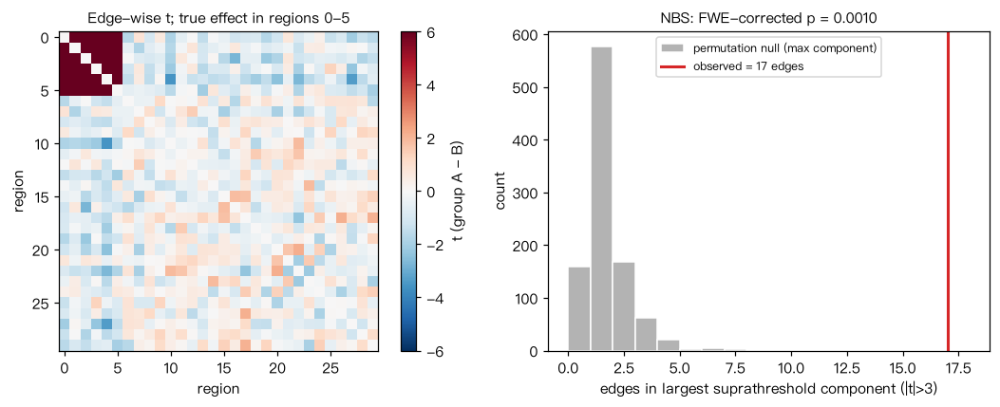

Example03 / 11
置换检验比较两组网络——逐边 FDR 与基于网络的统计（NBS）
模拟两组被试（各 20 人）、30 个脑区的功能连接；B 组在脑区 0–5 组成的子网络内连接减弱。 每名被试得到一个 Fisher z 矩阵，逐边做两样本 t 检验，然后： (1) Benjamini–Hochberg FDR 校正；(2) NBS：主阈值 |t|>3 下超阈值边构成的最大连通分量大小， 置换组标签 1000 次得到最大分量大小的零分布，给出族错误率（FWE）校正的 p 值。 解读：NBS 的结论在“子网络”层面（这一组相连的边整体显著），不能据此说其中某一条边显著。
Output输出图

Output文字输出
边数=435，真实差异边=15 未校正 p<0.05：32 条，其中真实差异边 15 条 FDR q<0.05：17 条，其中真实差异边 15 条 NBS：最大超阈值分量含 17 条边，节点=[0, 1, 2, 3, 4, 5, 10, 27]，FWE 校正 p=0.0010 置换零分布中最大分量边数的 95% 分位数=3 平均连接强度组差=0.0037，置换 p=0.4883
Code代码
# 模拟两组被试（各 20 人）、30 个脑区的功能连接；B 组在脑区 0–5 组成的子网络内连接减弱。
# 每名被试得到一个 Fisher z 矩阵，逐边做两样本 t 检验，然后：
# (1) Benjamini–Hochberg FDR 校正；(2) NBS：主阈值 |t|>3 下超阈值边构成的最大连通分量大小，
# 置换组标签 1000 次得到最大分量大小的零分布，给出族错误率（FWE）校正的 p 值。
# 解读：NBS 的结论在“子网络”层面（这一组相连的边整体显著），不能据此说其中某一条边显著。
import numpy as np
import networkx as nx
from scipy import stats
rng = np.random.default_rng(3)
N, T, n_per = 30, 150, 20
iu = np.triu_indices(N, 1)
sub = np.arange(6)
def subject_fc(effect):
"""模拟一名被试的 Fisher z 连接向量。effect 为子网络内共同信号的载荷。"""
common = rng.standard_normal(T)
X = 0.4 * common + rng.standard_normal((N, T))
X[sub] += effect * rng.standard_normal(T) # 子网络共享的额外信号
R = np.corrcoef(X)
return np.arctanh(R[iu])
ZA = np.array([subject_fc(0.9) for _ in range(n_per)])
ZB = np.array([subject_fc(0.5) for _ in range(n_per)])
Zall = np.vstack([ZA, ZB])
grp = np.r_[np.zeros(n_per), np.ones(n_per)].astype(bool)
truth = np.isin(iu[0], sub) & np.isin(iu[1], sub)
def tstats(Z, g):
return stats.ttest_ind(Z[~g], Z[g], axis=0).statistic
t_obs = tstats(Zall, grp)
p_edge = 2 * stats.t.sf(np.abs(t_obs), df=2 * n_per - 2)
def bh(p, q=0.05):
m = len(p)
order = np.argsort(p)
passed = p[order] <= q * np.arange(1, m + 1) / m
k = np.max(np.nonzero(passed)[0]) + 1 if passed.any() else 0
sig = np.zeros(m, bool)
sig[order[:k]] = True
return sig
sig_fdr = bh(p_edge)
print(f"边数={len(p_edge)}，真实差异边={truth.sum()}")
print(f"未校正 p<0.05：{(p_edge < 0.05).sum()} 条，其中真实差异边 {(p_edge < 0.05)[truth].sum()} 条")
print(f"FDR q<0.05：{sig_fdr.sum()} 条，其中真实差异边 {sig_fdr[truth].sum()} 条")
def max_component(t, thr=3.0):
keep = np.abs(t) > thr
G = nx.Graph()
G.add_edges_from(zip(iu[0][keep], iu[1][keep]))
comps = list(nx.connected_components(G))
if not comps:
return 0, set()
best = max(comps, key=lambda c: G.subgraph(c).number_of_edges())
return G.subgraph(best).number_of_edges(), best
size_obs, nodes_obs = max_component(t_obs)
n_perm = 1000
null_max = np.empty(n_perm)
for b in range(n_perm):
null_max[b] = max_component(tstats(Zall, rng.permutation(grp)))[0]
p_fwe = (1 + np.sum(null_max >= size_obs)) / (n_perm + 1)
print(f"NBS：最大超阈值分量含 {size_obs} 条边，节点={sorted(int(v) for v in nodes_obs)}，FWE 校正 p={p_fwe:.4f}")
print(f"置换零分布中最大分量边数的 95% 分位数={np.quantile(null_max, 0.95):.0f}")
# 全局指标的置换检验：平均连接强度（Fisher z 均值）
g_stat = Zall.mean(axis=1)
d_obs = g_stat[~grp].mean() - g_stat[grp].mean()
d_null = np.array([g_stat[~g].mean() - g_stat[g].mean()
for g in (rng.permutation(grp) for _ in range(5000))])
p_glob = (1 + np.sum(np.abs(d_null) >= abs(d_obs))) / (5000 + 1)
print(f"平均连接强度组差={d_obs:.4f}，置换 p={p_glob:.4f}")
# 作图：逐边 t 统计量矩阵（子网络 0–5 在左上角），以及 NBS 最大分量的置换零分布
import matplotlib.pyplot as plt
fig, ax = plt.subplots(1, 2, figsize=(10, 4))
Tm = np.zeros((N, N)); Tm[iu] = t_obs; Tm += Tm.T
im = ax[0].imshow(Tm, cmap="RdBu_r", vmin=-6, vmax=6)
fig.colorbar(im, ax=ax[0], label="t (group A - B)")
ax[0].set_title("Edge-wise t; true effect in regions 0-5", fontsize=10); ax[0].set_xlabel("region"); ax[0].set_ylabel("region")
ax[1].hist(null_max, bins=range(int(max(null_max.max(), size_obs)) + 2), color="0.7", edgecolor="white",
label="permutation null (max component)")
ax[1].axvline(size_obs, color="C3", lw=2, label=f"observed = {size_obs} edges")
ax[1].set_xlabel("edges in largest suprathreshold component (|t|>3)"); ax[1].set_ylabel("count")
ax[1].set_title(f"NBS: FWE-corrected p = {p_fwe:.4f}", fontsize=10); ax[1].legend(fontsize=8)
plt.tight_layout(); plt.show()Run在浏览器中运行
首次加载 Python 环境约需 20–40 秒；可以修改参数后重新运行。